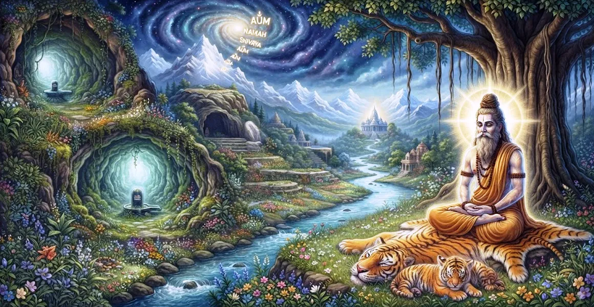

The Non-Dualistic Nature of Shiva
The seventeenth chapter of the Kailasa Samhita explores the non-dualistic nature of Shiva (Advaita), revealing the absolute unity between the individual soul and supreme consciousness.
Sage Suta elucidates how the seeker, upon transcending illusion, realizes that 'Thou art That' and abides in eternal oneness with Mahadeva.
This chapter guides the spiritual aspirant to the pinnacle of non-dual realization and liberation.
Chapter 17 Highlights
Advaita Realization
Explores the profound non-dual truth where duality ceases to exist.
Soul and Supreme
Reveals the identical essence of the individual soul (Jiva) and Lord Shiva.
Dissolving Illusion
Shows how knowledge shatters the veil of separation and ignorance.
Supreme Oneness
Establishes the experience of universal unity in all states of being.
Absolute Liberation
Grants the fruit of ultimate freedom through direct self-realization.
Bridge to Initiation
Prepares the seeker for the sacred procedure of initiating a disciple in Chapter 18.
Core Topics in This Chapter
The Non-Dual Reality of Consciousness
Sage Suta explains that truth is one without a second (Ekamevadvitiyam). There is no independent reality apart from Lord Shiva.
All diversity in the universe is merely a play of names and forms resting upon the single non-dual substance of divine awareness.
The Identity of Jiva and Shiva
The core teaching of this chapter is the absolute identity between the individual soul (Jiva) and supreme Shiva.
When the limiting adjuncts of mind and body are transcended, the inner self shines forth as none other than Mahadeva.
Overcoming the Illusion of Separation
Ignorance creates the false sense of 'I' and 'other', binding the soul to sorrow and repeated rebirth.
Advaita wisdom cuts through this illusion, revealing that the observer and the observed are essentially one.
The Path of Direct Self-Realization
Through deep contemplation, meditation, and the grace of a qualified master, the seeker awakens to their true divine nature.
This realization is not an intellectual concept but a direct, undeniable experience of limitless consciousness.
The Supreme Fruits of Advaita Wisdom
Realizing the non-dual nature of Shiva brings an end to all existential anxiety, fear, and dualistic conflict.
The realized soul experiences boundless peace, universal love, and unshakeable freedom.
Living as a Liberated Soul
Sage Suta describes how a person established in Advaita lives in the world yet remains completely untouched by its dualities.
They see Shiva in all beings and all beings in Shiva, acting with supreme compassion and equanimity.
Transition to Chapter 18
Having expounded the supreme non-dual realization in Chapter 17, Sage Suta introduces Chapter 18, 'The Procedure of Initiating a Disciple'.
Chapter 18 details the sacred rituals and traditions of passing down spiritual initiation to sincere seekers.
Key Teachings of Chapter 17
One Without Second
Ultimate reality is singular and undivided; Shiva is all that exists.
Soul is Shiva
The essence of the individual soul is identical to supreme consciousness.
End of Duality
Wisdom eradicates the illusion of separation and division.
Direct Experience
Advaita is realized through direct inward awakening, not mere philosophy.
Boundless Peace
Realization brings freedom from fear, sorrow, and existential conflict.
Universal Vision
The liberated sage perceives divine oneness in every creature.
Spiritual Reflection
When you look within and strip away the layers of transient thoughts, roles, and bodily identifications, what remains is pure, luminous awareness. That awareness is not separate from Lord Shiva; it is the very heart of the non-dual absolute.
Living the Message of Chapter 17
Practice seeing beyond external differences, recognizing the same divine consciousness in all beings you encounter.
Release the burden of division and rest in the silent conviction of your essential unity with Mahadeva.
Let non-dual awareness infuse your actions with compassion, peace, and unconditional love.
Key Spiritual Concepts
The supreme philosophical truth of non-duality and absolute oneness.
The absolute identity and unity between the individual soul and Shiva.
The scriptural declaration that ultimate reality is one without a second.
The delusory perception of division and separation between entities.
The meditative state of abiding as the pure, non-dual witness.
The sacred transition toward receiving initiation into spiritual practice in Chapter 18.
Chapter Summary
Kailasa Samhita Chapter 17 presents The Non-Dualistic Nature of Shiva. Exploring the Advaita reality, the absolute identity of Jiva and Shiva, the dissolution of separation, and the fruits of direct realization, this chapter brings the seeker to the peak of spiritual wisdom. It paves the way for Chapter 18, 'The Procedure of Initiating a Disciple', guiding the transmission of sacred knowledge.
Frequently Asked Questions
1. What is the primary subject of Kailasa Samhita Chapter 17?
Chapter 17 explores the non-dualistic nature of Shiva (Advaita), detailing the absolute unity between the individual soul and supreme consciousness.
2. What does non-duality (Advaita) mean in the context of Lord Shiva?
It signifies that there is no fundamental division between the creator (Shiva) and the created soul (Jiva); both share the same essence of pure consciousness.
3. How does Chapter 17 connect with the preceding chapter?
While Chapter 16 establishes Shiva's Principle as the supreme ontological ground, Chapter 17 takes the next step to reveal that this very ground is identical to one's own inner self.
4. What is the effect of realizing the non-dual nature of Shiva?
Realizing non-duality eradicates all fear, illusion, and sense of separation, bestowing supreme liberation (Moksha).
5. How is this realization practiced in daily life?
By recognizing the divine presence in all beings and resting the mind in the silent awareness of the inner self.
6. What is the next chapter for navigation after Chapter 17?
The next chapter for navigation is Chapter 18, titled 'The Procedure of Initiating a Disciple'.
“When illusion vanishes, the individual soul and Lord Shiva are known to be one indivisible ocean of pure consciousness.”
Continue Through Kailasa Samhita
Chapter 17 details The Non-Dualistic Nature of Shiva. Continue to Chapter 18, The Procedure of Initiating a Disciple.